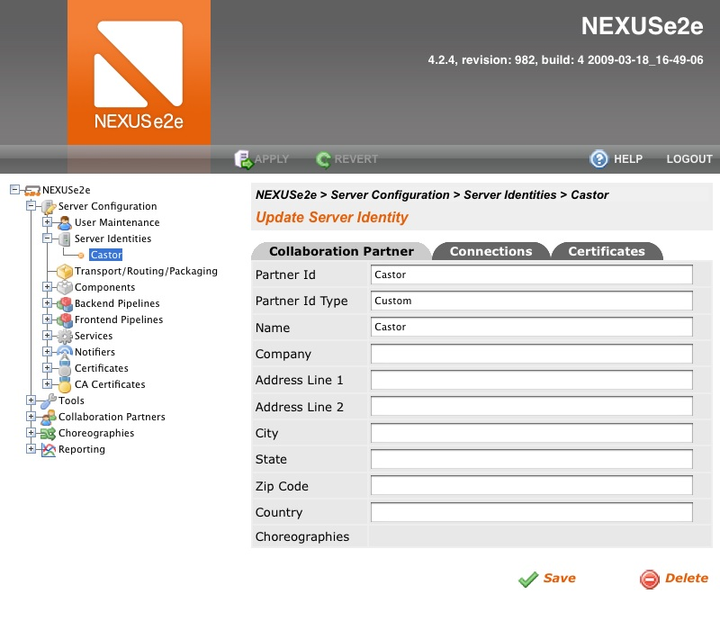
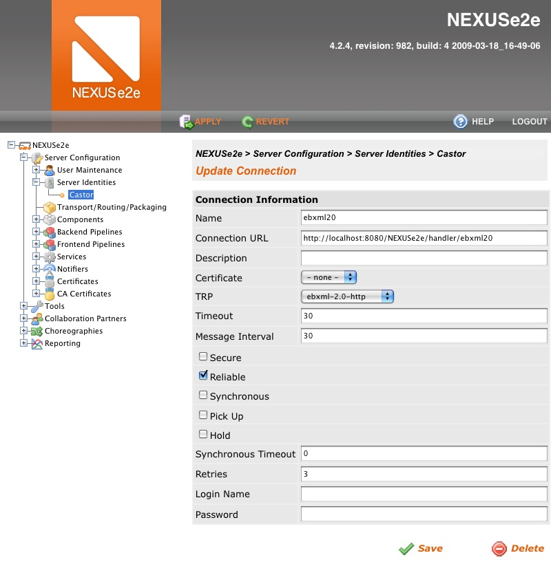
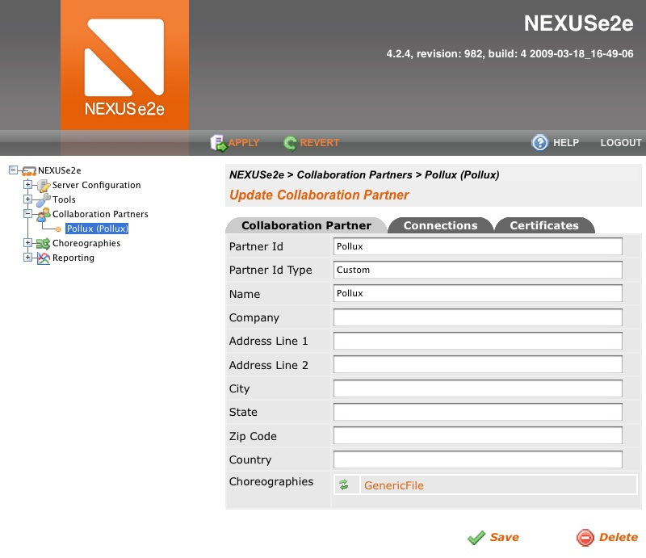
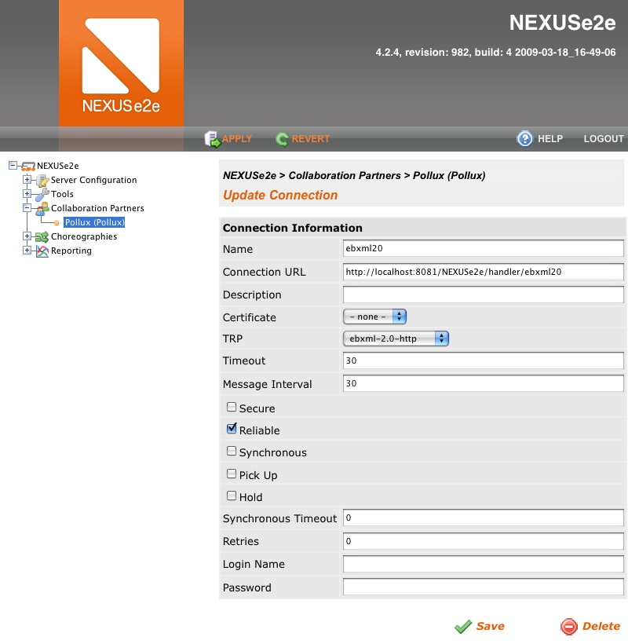
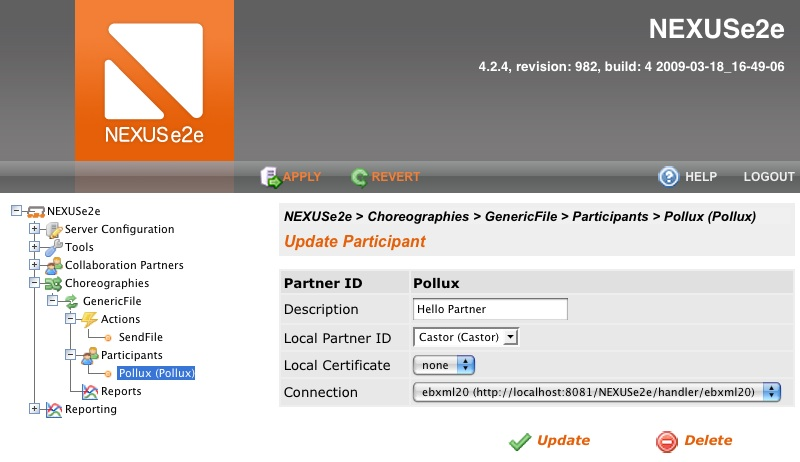
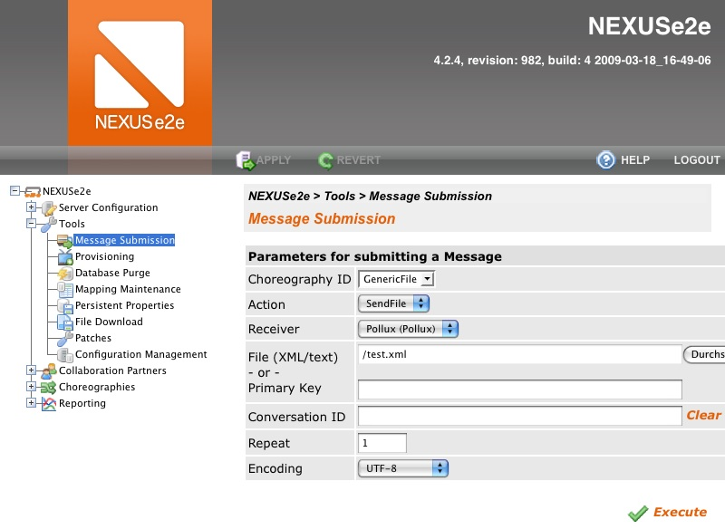

First Steps in Messaging
In this section we show you how easy it is to set up reliable messaging over the ebXML 2.0 standard
protocol.
The fundamental prerequisite for exchanging messages is a peer that receives your messages
or sends messages to you. If you do not have a suitable business partner at hand yet, you
can install another instance of NEXUSe2e server on a different machine. Another idea would
be to set up an additional servlet container on the same machine, that listens on a
different port, or deploy the NEXUSe2e webapp twice to the same servlet container, but with
different names.
The default configuration of NEXUSe2e server contains several preset. You can just use the
presets or modify them as you like in the following configuration steps.
Log In as Administrator
Start your web browser and point it to http://<server>:<port>/<deployment_name>.
For Tomcat running the default configuration on the local machine--this is the case if you
installed with the Windows installer, the url is: http://localhost:8080/NEXUSe2e.
If you have not chopped the version substring, e.g. _4.2.4, from the war file's
name before deployment, you probably need to append it to the URL.
The default administration account is admin with password admin.
Set the Server Identity
The Server Identity is a unique id called Partner Id identifying your server to your
communication partners. The Partner Id can be anything and its structure or format is
typically agreed upon between communication partners. One possible example is the D-U-N-S number of your organization.
- Navigate through the tree and find NEXUSe2e > Server Configuration > Server
Identities.
- You can either add a new identity with the Add Server Identity button, or
select an existing identity for editing.
- On the Collaboration Partner tab enter your identity information. Enter at
least:
Partner Id
The logical id of your organisation/server, e.g. your D-U-N-S number. This is a logical unique identifier that is not interpreted by the system.
Partner Id Type
The type of your id, e.g. "DUNS" or "Custom", if not registered anywhere. This is a logical classification of the Partner Id that is not interpreted by the system.
Name
Human readable name of your organisation/server.
- Click Save
- 
- Zoom
- Server Identity-Collaboration Partner
{kind=link}
- Select the Connections tab and click Add Connection
- Give it at least a:
Name
Display name of this connection.
Connection URL
The url of your server's message handler. For example the NEXUSe2e standard handlerhandler/ebxml20.
TRP
Transport/Routing/Packaging information. Select ebxml-2.0-http for this example.
- Click Save
- 
- Zoom
- Server Identity Connection
{kind=link}
Add a Collaboration Partner
Now you should specify with whom you want to exchange messages. The settings are similar to
your Server Identity above.
- Navigate through the tree and find NEXUSe2e > Collaboration Partners.
- Click Add Collaboration Partner or edit an existing partner.
- On the Collaboration Partner tab enter your partner's identity information.
Enter at least:
Partner Id
The logical id of your partner's organisation/server, e.g. the D-U-N-S number.
Partner Id Type
The type of your partner's id, e.g. "DUNS" or "Custom", if not registered anywhere.
Name
Human readable name of your partner's organisation/server.
- Click Save
- 
- Zoom
- Collaboration Partners - Collaboration Partner
{kind=link}
- Select the Connections tab and click Add Connection, or edit an
already existing connection.
- Give it at least a:
Name
Display name of this connection.
Connection URL
The url of your partner's server message handler. For example the NEXUSe2e standard handler handler/ebxml20. This should be the url of your second NEXUSe2e installation.
Note that you cannot use a single instance of NEXUSe2e as a loopback to send messages to yourself.
TRP
Transport/Routing/Packaging information. Select ebxml-2.0-http for this example.
- Click Save
- 
- Zoom
- Collaboration Partners - Connection
{kind=link}
Create a Choreography
Choreographies (based on the ebXML terminology) are business processes. Each
choreography is identified by a unique logical id that has to be agreed upon between
communications partners.
The default configuration contains a preconfigured choreography called GenericFile.
GenericFilemodels a simple business process for sending and receiving files without
any additional processing.
In order to exchange files based on GenericFile, you must add a business partner as
Participant.
- Navigate through the menu tree and find NEXUSe2e > Choreographies > GenericFile > Participants
- If your partner--that you've created in the previous step of this guide--is not yet
listed as participant click Add Participant. If you find your partner already
listed as participant, because you edited the preset partner, click on the partner link
and verify the settings.
- In the Add Participant or Update Participant form select:
Partner ID
The partner you want to exchange messages with.
Local Partner ID
The local server identity you want to act as.
Connection
The url of your partner's message handler.
- Click Save or Update.
- 
- Zoom
- Choreographies - Participant
{kind=link}
Apply Configuration Changes and Send a Message
Configuration changes in NEXUSe2e server are transactional. The are only activated after you
clicked the Apply button on top of the gui. This will reload the NEXUSe2e engine
with the new configuration. Of course you can alternatively revert all changes by clicking
Revert. The Apply andRevert buttons get enabled as soon as there
are pending configuration changes.
Usually you will want to send messages automatically. But in order to test connectivity you
can manually send a message to your partner:
- Apply your configuration changes by click on Apply.
- Navigate through the tree and find NEXUSe2e > Tools > Message
Submission
- Select at least:
Choreography ID
The id of the business process for this message--in this case GenericFile.
Action
The action to take within the selected choreography--for GenericFile there is a preset action called SendFile.
Receiver
A participant of the selected choreography that should receive your message--the collaboration partner you configured above.
File
Select any file to submit.
- Click Execute. Sooner or later you should get a brief notification that your message was sent or that something went wrong.
- 
- Zoom
- Tools - Message Submission
{kind=link}
Check the Status of Your Messages
NEXUSe2e contains a transaction log that lists all messages that were sent and received. You
can filter by Partner, Choreography, Action, Status,
Message ID, Conversation ID and Date.
In NEXUSe2e all messages are part of a Conversation (based on ebXML terminology). A
conversation is basically an instance of a Choreography. Conversations have their
own status. In this example we made use of a one-step choreography. Advanced business
processes implement multi-step choreographies. Related messages of a multi-step choreography
are grouped in the same conversation.
- Navigate through the tree and find NEXUSe2e > Reporting > Transaction
Reporting
- You should see the conversation of the message you just sent. If the message was sent
correctly, and an acknowledgement was received, the status should be COMPLETED.
- To see all messages related to this conversation, click on the conversation entry.
- If everything went right, you should find there two message entries: the message you
sent to your partner (message type Normal) and the acknowledgement (message
typeAcknowledgement) you got back from your partner.
- To examine the contents of the messages, click on them and find the download link.
That is it. If you experience any problems, consult other help and troubleshooting resources available on this website. If you are still stuck, drop us a line to nexuse2e dot support atdirekt-gruppe dot de.